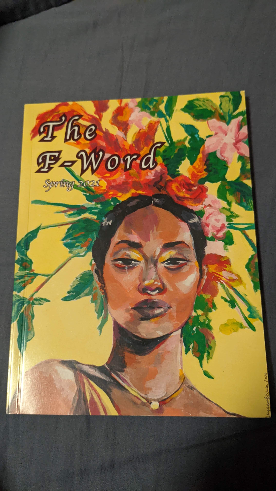
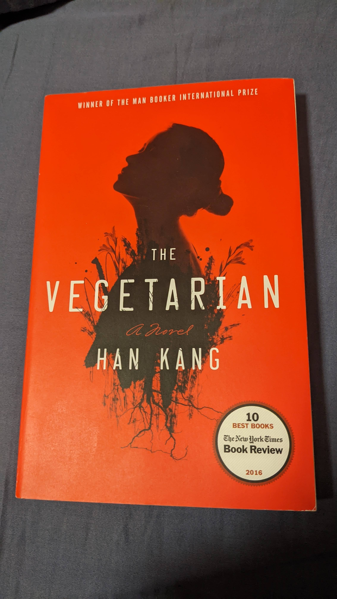

The F-Word Spring 2021 Volume (January)
The Vegetarian by Han Kang (January Bonus Round!)See also:
- (At Least) 12 Books in 12 Months - 2017
- (At Least) 12 Books in 12 Months - 2018
- (At Least) 12 Books in 12 Months - 2019
- (At Least) 12 Books in 12 Months - 2020
- (At Least) 12 Books in 12 Months - 2020

